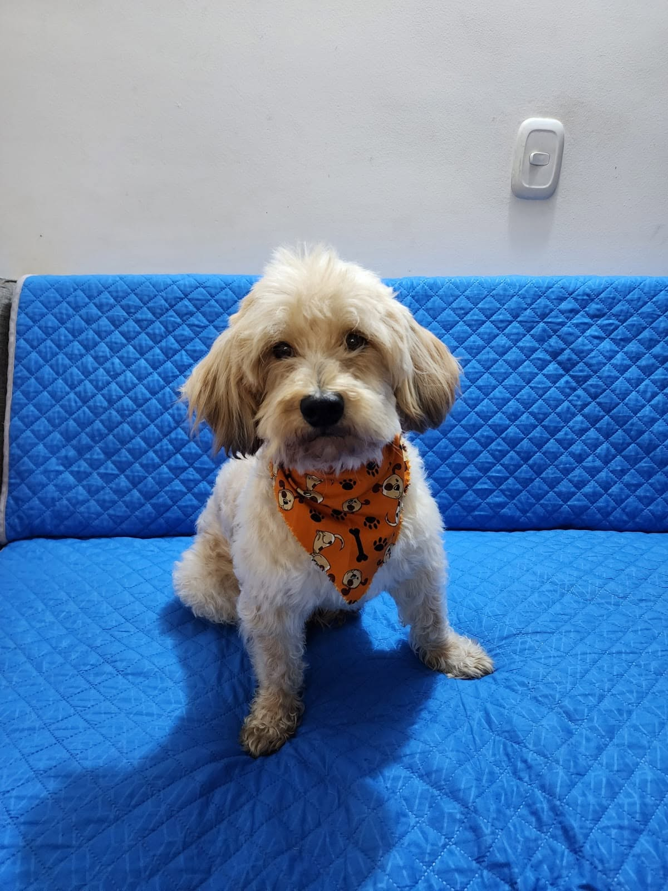
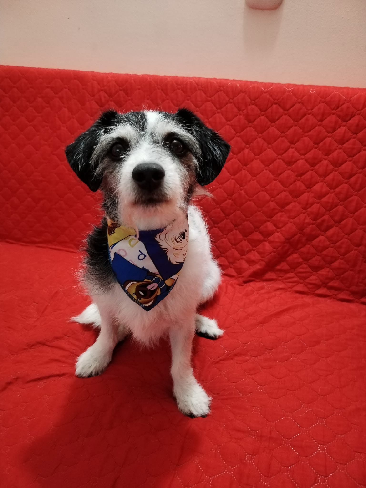
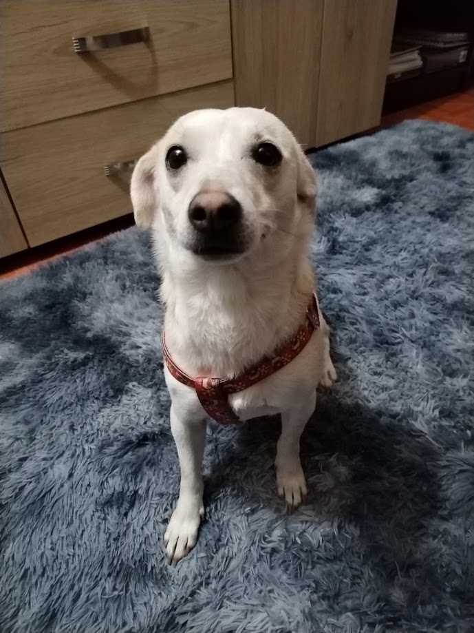
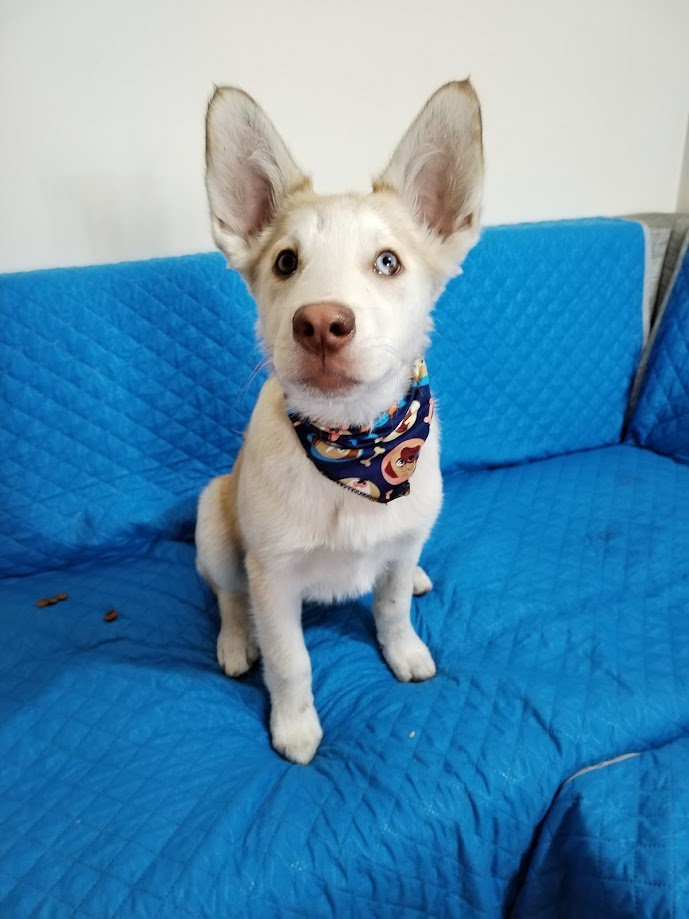
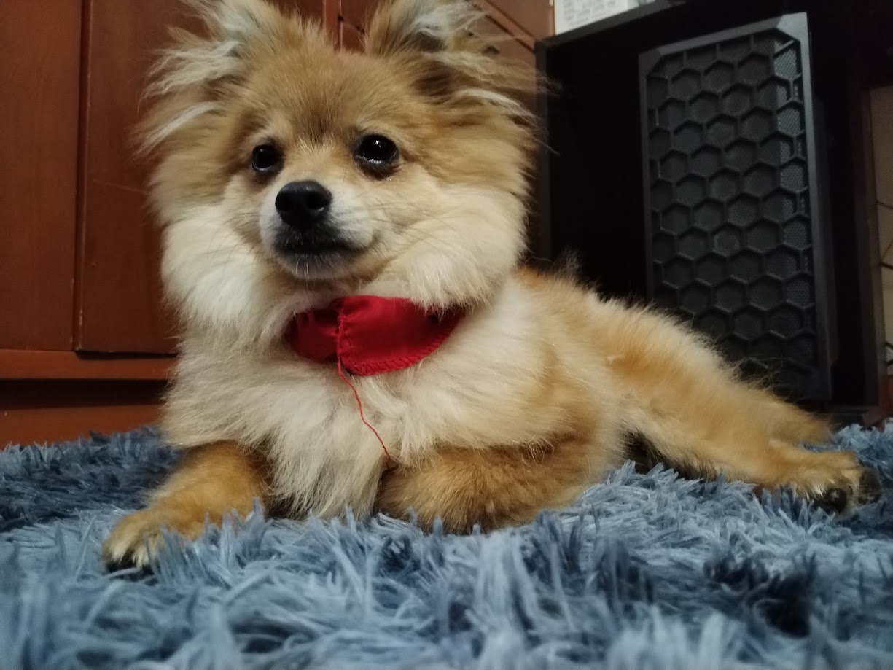
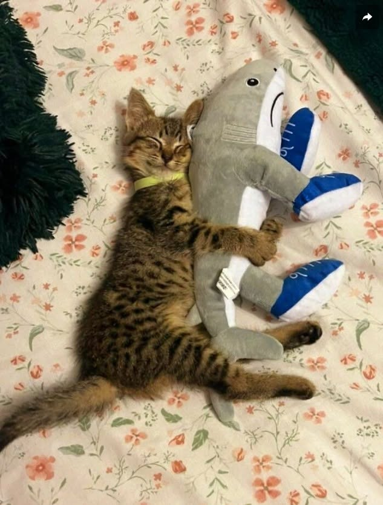
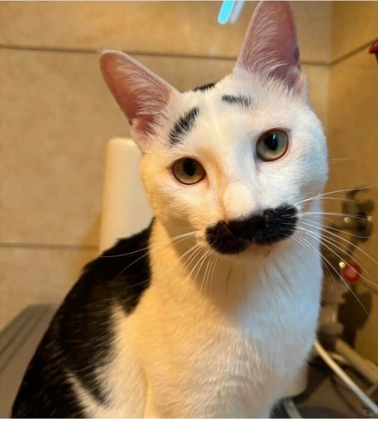

Esterilizado¿Quiénes somos?
Somos un grupo de personas comprometidas con el bienestar animal, dedicadas al rescate y cuidado de perros y gatos que se encuentran en situación de vulnerabilidad, abandono o necesitan una segunda oportunidad.
En Clan 8 SOS trabajamos para brindarles protección, cuidado y mucho amor mientras encontramos para ellos un hogar responsable donde puedan sentirse seguros y formar parte de una familia. Nuestra casa hogar está ubicada en Bogotá.
Mascotas en Adopción - Perros y Gatos 🐾
Conoce a nuestros rescatados. Puedes solicitar su adopción o apadrinar su cuota de cuidado.
Perros en Adopción

Esterilizado
Esterilizada
Por Esterilizar
EsterilizadoGatos en Adopción
 Esterilizado
Esterilizado
 Esterilizado
Esterilizado
 Esterilizada
Esterilizada

Esterilizada
EsterilizadaQuiero adoptar
Tienda Solidaria y Donaciones 🐾
Cada compra o donación apoya al rescate y cuidado de los peluditos.
❤️ Aportes Solidarios
🐾
Alimentación
Aporte para bultos de comida.
$5.000
💉
Atención Veterinaria
Medicinas y vacunas.
$10.000
🏠
Ayuda al Refugio
Mantenimiento del albergue.
$20.000
🦮 Accesorios y Cuidado
🏷️
Placa Grabada
Acero inoxidable con datos.
$15.000
🐕
Collar + Lazo
Kit de nylon resistente.
$32.000
👕
Capa Térmica
Protección para el frío.
$28.000
🛒 Tu Carrito de Compras
Resumen de donaciones y artículos| Ítem / Descripción | Precio | Acción |
|---|
Tu carrito está vacío. ¡Agrega algún artículo o donación para apoyar al albergue!
Total a pagar:
$0
Contáctanos
Casa Hogar: Cra. 100 # 50B-45 Sur, Bogotá
Celular: 313 856 4564
TikTok: @clan8sos
Facebook: Clan 8 SOS